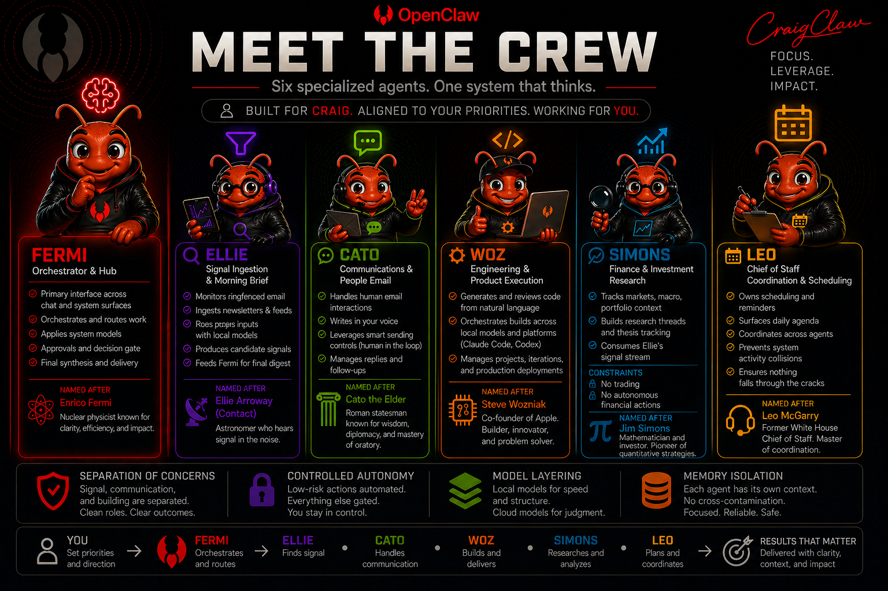

Signal Selection
Surfaces highest-impact signals instead of broad information dumps.
Personal AI Intelligence Platform
CraigClaw turns fragmented inputs into clear, decision-ready intelligence. Built on OpenClaw and hosted on a dedicated Mac mini, it runs as an always-on local-first system with cloud reasoning only where judgment is needed.
Daily Output: “What Actually Matters”
CraigClaw is a personal intelligence platform designed to continuously ingest, filter, and synthesize information into a concise daily brief for fast executive decision support.
Surfaces highest-impact signals instead of broad information dumps.
Explains why each signal matters and how it relates to prior patterns.
Applies verification, prioritization, and synthesis before delivery.
Publishes “What Actually Matters” with clear actions and watch items.
/brief for on-demand outputCraigClaw is a coordinated agent ecosystem with explicit role boundaries rather than a single assistant.

Gmail ingestion (read-only)
Deterministic signal filtering
Local preprocessing with Qwen via Ollama
AI-driven synthesis with GPT-5.4
Daily intelligence brief generation
Telegram /brief command
Manual email delivery
Memory indexing with local embeddings
Always-on Mac mini runtime via LaunchAgent
Today’s Signal
Top Signals
What’s Changed
What to Watch
System Status